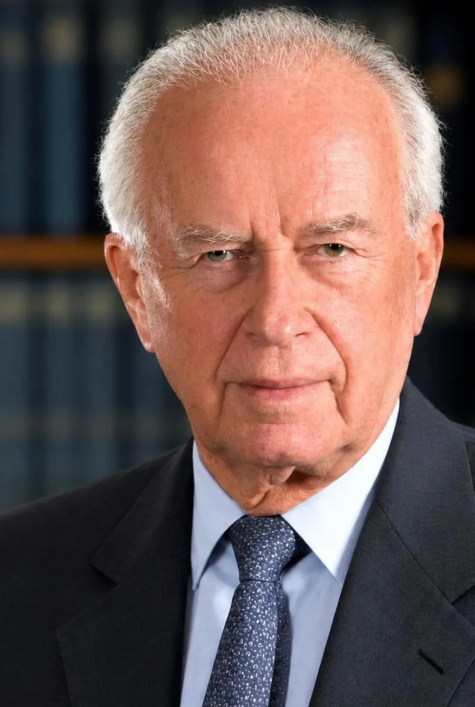

יצחק רבין
יש אנשים שאנחנו מכירים בעיקר משמות של רחובות, תמונות או ספרים. אבל מאחורי כל שם כזה היה אדם אמיתי: ילד עם חלומות, תחביבים, הצלחות וקשיים.
בואו נכיר אותוהחיים שלו בדקה
הזיזו את הפס ועברו בין השנים
הילד
יצחק נולד ב־1 במרץ 1922 בירושלים. מדינת ישראל עוד לא הייתה קיימת.
ההורים שלו, רוזה ונחמיה, היו מחלוצי העלייה השלישית, ושניהם היו פעילים מאוד למען החברה. את אמא שלו כינו "רוזה האדומה". היא הייתה פעילה ב"הגנה", במאבקי פועלים ובמערכת החינוך.
ב־1923 עברה המשפחה לתל אביב, וב־1925 נולדה אחותו הצעירה, רחל. ההורים היו עסוקים כל הזמן, ולכן יצחק למד להיות עצמאי כבר מגיל צעיר.
החליקו לעוד תמונות
ב־1928 התחיל ללמוד ב"בית החינוך לילדי עובדים" בתל אביב. בית ספר ששילב לימודים, עבודה, טיולים ופעילות חברתית. הוא גם הצטרף לתנועת הנוער העובד.
הוא היה נער ביישן וחרוץ שהצטיין בלימודים. ב־1937 התחיל ללמוד בבית הספר החקלאי כדורי בכפר תבור, ושם הכיר את יגאל אלון, שגייס אותו ל"הגנה". השניים הפכו לחברים.
בגיל 15, חודשים אחדים אחרי שהגיע לכדורי, אמו נפטרה ממחלה. זה השפיע עליו מאוד ועל המשך חייו.
הפלמ״ח
כבר בתחילת הדרך השתתף בפעולה צבאית בלבנון ובסוריה, יחד עם הצבא הבריטי. בהתחלה הוא לא נחשב למפקד בולט במיוחד, אבל מפקד הפלמ״ח, יגאל אלון, זיהה את הפוטנציאל שלו ותמך בו.
ב־1945, בגיל 23, השתתף בפריצת מחנה המעפילים בעתלית ובשחרור המעפילים שהיו כלואים בו. אחר כך נפצע קשה בתאונת אופנוע.
ביוני 1946, ב"שבת השחורה", הבריטים עצרו אותו ושלחו אותו למחנות מעצר בלטרון וברפיח, והוא השתחרר רק אחרי כחמישה חודשים.
בסוף 1946 מונה למפקד הגדוד השני של הפלמ״ח, ובאוקטובר 1947 לקצין המבצעים של הארגון, בעצם סגנו של יגאל אלון.
מלחמת העצמאות
החטיבה שלו נלחמה קרבות קשים בדרך לירושלים ועל העיר עצמה. רבין היה מעורב במבצע נחשון, שנועד לפרוץ את הדרך לירושלים, ובפריצת "דרך בורמה", שהביאה אספקה לעיר הנצורה.
אחר כך שימש סגנו של יגאל אלון במבצע דני, שבמהלכו נכבשו לוד ורמלה. בחזית הדרום השתתף בתכנון מבצעים חשובים, ובהם מבצע יואב, שבמהלכו נכבשה באר שבע, ומבצע חורב. לקראת סוף המלחמה השתתף בשיחות שביתת הנשק עם מצרים.
במהלך ההפוגה הראשונה קיבל פיקוד על הגנת מטה הפלמ״ח בפרשת האונייה אלטלנה, והורה לירות לעברה בהתאם לפקודת בן־גוריון.
לימים תיאר את האירוע כאחד הימים הקשים בחייו.הרמטכ״ל
רבין היה הרמטכ״ל השביעי של צה״ל, כלומר המפקד הראשי של הצבא. בתקופתו חיזק את הצבא, רכש אמצעי לחימה מתקדמים ושיפר את תוכניות המלחמה.
במאי 1967 נכנסו כוחות מצריים לסיני, וכוחות האו״ם נסוגו מהאזור. רבין חשש ממלחמה מתקרבת, ושכנע את ראש הממשלה לוי אשכול להעלות את הכוננות ולגייס מילואים.
ב־5 ביוני 1967 פרצה מלחמת ששת הימים, והיא נפתחה במבצע מוקד של חיל האוויר. צה״ל נלחם בשלוש חזיתות, מול מצרים, ירדן וסוריה, וב־7 ביוני נכנסו כוחותיו לעיר העתיקה בירושלים.
אחרי המלחמה העניקה לו האוניברסיטה העברית תואר דוקטור לשם כבוד, ובטקס בהר הצופים נשא את נאומו המפורסם על רוח צה״ל ומשמעות הניצחון.
מהצבא לפוליטיקה
שגריר בארצות הברית (1968–1973). חיזק את הקשרים בין המדינות, שהפכו לספקית הנשק העיקרית של ישראל ולבעלת ברית חשובה.
ראש הממשלה בפעם הראשונה (1974–1977). התמנה אחרי התפטרות גולדה מאיר, בעקבות מלחמת יום הכיפורים. ב־1975 נחתם הסכם ביניים עם מצרים, וב־1976 אישר את מבצע אנטבה, שבו חולצו בני ערובה ישראלים וזרים ממטוס שנחטף לאוגנדה.
ב־1977 התפטר בעקבות פרשת חשבון הבנק של אשתו לאה בארצות הברית, שהפרה את חוקי המטבע של אז.
שר הביטחון (1984–1990). התמודד עם מלחמת לבנון ועם האינתיפאדה הראשונה, ונקט מדיניות תקיפה כלפי ההתקוממות הפלסטינית.
הדרך לשלום
ב־1992 נבחר שוב לראש הממשלה. הוא האמין שלצד צבא חזק ושמירה על ביטחון ישראל, צריך לנסות להגיע להסכמים מדיניים שיצמצמו את הסכסוך ויאפשרו עתיד בטוח יותר.
"הייתי איש צבא 27 שנים. נלחמתי כל עוד לא היה סיכוי לשלום. אני מאמין שיש סיכוי לשלום, סיכוי גדול."
מתוך עצרת השלום, כיכר מלכי ישראל, 1995מחלוקת והסתה
לא כולם הסכימו עם רבין. היו ויכוחים גדולים במדינה, ואנשים רבים מתחו ביקורת על החלטותיו. זה לגיטימי: במדינה דמוקרטית מותר לאנשים לחשוב אחרת, להתווכח ולהביע ביקורת.
חלק מהם תמכו בהסכמים וראו בהם הזדמנות לשלום. אחרים התנגדו וחששו שהם יסכנו את ביטחון המדינה. אבל הביקורת לוותה גם במשהו אחר.
בשנים שלפני הרצח התנהלה נגד רבין הסתה קשה: בהפגנות נשמעו קריאות נגדו, הופצו כרזות עם מסרים קיצוניים והוצגו תמונות שהשוו אותו לבוגד. ההסתה העמיקה את השסע בחברה ויצרה אווירה של שנאה כלפיו.
כרזה מהפגנה, עם הכיתוב "הבוגד"
רבין מולבש במדי האס אס (מדי הנאצים)
"אלימות היא כרסום יסוד הדמוקרטיה הישראלית. יש לגנות אותה, להוקיע אותה, לבודד אותה."
יצחק רבין4 בנובמבר 1995
בכיכר נערכת עצרת תמיכה בממשלה ובתהליך השלום. מאות אלפי אנשים באים להביע תמיכה בדרך המדינית של רבין ובניסיונותיו לקדם שלום.
רבין מצטרף לשמעון פרס ולזמרת מירי אלוני ושר עם הקהל את "שיר לשלום".
רבין יורד אל מכוניתו בליווי מאבטחיו. יגאל עמיר יורה בו שלושה כדורים מטווח קצר, ושניים מהם פוגעים בו באופן אנוש.
רבין מובהל לבית החולים איכילוב בתל אביב. הרופאים מנסים להציל את חייו, אך הוא נקבע כמת.
ממשלת ישראל מודיעה רשמית על מותו של ראש הממשלה ושר הביטחון, יצחק רבין. המדינה כולה נכנסת לאבל כבד.
הרוצח היה סטודנט דתי למשפטים בן 25, שהחזיק בדעות ימניות קיצוניות והתנגד בחריפות להסכמי אוסלו. הוא נידון למאסר עולם ולעונשי מאסר נוספים.
ראש ממשלה נרצח בגלל דעותיו והחלטותיו. זה היה רגע קשה וכואב בתולדות המדינה, שזעזע את ישראל ואת העולם כולו.
דף המילים של "שיר לשלום" שנמצא בכיסו של רבין
שערי העיתונים בימים שאחרי הרצח. החליקו ולחצו להגדלה
שלום, חבר
בין הבאים היו נשיא ארצות הברית ביל קלינטון, מלך ירדן חוסיין ונשיא מצרים חוסני מובארכ. נכדתו, נעה בן ארצי, נשאה הספד מרגש.
קלינטון סיים את דבריו במילים בעברית, שהפכו לאחד הביטויים המזוהים ביותר עם זכרו של רבין:
"שלום, חבר"
שמעון פרס התמנה לראש הממשלה. ועדת שמגר בדקה את נסיבות הרצח, והצביעה על כשלים חמורים במערך האבטחה. בעקבות המסקנות התפטר ראש השב״כ כרמי גילון.
השם שנשאר
זוכרים את ההתחלה? אנשים שמכירים משמות של רחובות. הנה חלק מהם. מאז הרצח מציינים מדי שנה את יום הזיכרון ליצחק רבין, בי״ב בחשוון, כדי להנציח את דמותו ואת פועלו, לזכור את נסיבות מותו ולעודד שיח מכבד.
החליקו לעוד מקומות
במילים שלו
החליקו בין הציטוטים. איזה מהם מדבר אליכם?
"שלום עושים עם אויבים."
יצחק רבין"אל תקבלו מוסכמות קיימות, לא בחברה, ולא בתחומים אחרים. החברה צריכה לדעת להשתנות. חברה או מדינה שלא משתנה מתנוונת. המציאות איננה מה שהיה לפני חמישים שנה. ואם יש משהו שצריך לייחד נוער, זו מרדנות נגד מוסכמות. לא מרדנות לשם מרדנות, אלא מרדנות לשם שינוי. קיימו את אשר ראוי לקיים, שנו את אשר ראוי לשנות, והרבה דברים דורשים שינוי."
יצחק רבין"השלום הוא קודם כל בתפילות, אך לא רק בתפילות."
יצחק רבין"אין לי נכסים, יש לי רק חלומות להוריש לדורות הבאים עולם טוב יותר, מפויס יותר, עולם שנעים לחיות בו. אין זה הרבה מדי."
יצחק רבין"האדם אינו פלדה. הוא לב ונשמה, הוא בוכה וצוחק. הוא אוהב וכואב. הוא מסתער ונפצע וזועק. האדם הוא אדם."
יצחק רבין"אין דרך לישראל בלי מכאובים. עדיפה דרך השלום מאשר דרך המלחמה."
יצחק רבין"די לדם ולדמעות. די. אין בנו שנאה כלפיכם, אין אנו תאבי נקמה. אנו כמוכם: אנשים שרוצים לבנות בית, לטעת עץ, לאהוב ולחיות לצדכם בכבוד, באהדה, כבני אדם, כבני חורין."
יצחק רבין"ביטחון איננו רק הטנק, המטוס וספינת הטילים. ביטחון הוא גם, ואולי אף קודם כול האדם, האזרח הישראלי. ביטחון הוא גם החינוך של האדם, הוא הבית שלו, הוא הרחוב והשכונה שלו, הוא החברה שבתוכה צמח. וביטחון הוא גם התקווה של האדם."
יצחק רבין"לאחר מלחמות ואירועי דמים לאין ספור, אנו שולטים על יותר מ־2 מיליוני פלשתינים באמצעות צה"ל ומנהלים את חייהם על־ידי מינהל אזרחי. אין זה פתרון של שלום. אנו יכולים להמשיך להילחם, אנחנו יכולים להמשיך להרוג ולהמשיך להיהרג, אבל אנחנו גם יכולים לנסות להפסיק את מעגל הדמים הבלתי־נגמר הזה; אנחנו יכולים לתת גם סיכוי לשלום."
בעת אישור הסכם אוסלו ב׳ בכנסת, 5 באוקטובר 1995"ואני, מספר אישי 30743, רב־אלוף במילואים, יצחק רבין, חייל בצבא ההגנה לישראל ובצבא השלום, אני, ששלחתי גייסות אל האש וחיילים אל מותם, אומר לך, מלך ירדן, ואומר לכם ידידים אמריקנים: אנו יוצאים היום למלחמה שאין בה הרוגים ופצועים, ולא דם ולא סבל, וזו המלחמה היחידה שתענוג להשתתף בה: המלחמה על השלום. ומחר, בדרך העולה לירושלים, אלפי פרחים יעטפו באהבה את חלקי המשוריינים החלודים, אלה שלא הגיעו אל העיר. מחר, אלפי פרחים יחייכו שלום אלינו משלדי המתכת."
נאום בפני הקונגרס של ארצות הברית, וושינגטון, 26 ביולי 1994. מתוך הספר "רודף שלום"ומה איתנו?
יום הזיכרון לרצח רבין מזכיר לנו שוויכוח הוא חלק מהחיים במדינה דמוקרטית, אבל אלימות לעולם אינה הדרך להכריע ויכוח.
אנחנו לא חייבים להסכים זה עם זה. אבל אנחנו כן חייבים לזכור שמולנו עומד אדם, שגם לו יש רגשות, מחשבות וזכות להביע את דעתו.
מסכימים או לא מסכימים?
אין כאן תשובות נכונות או לא נכונות. המטרה היא לראות עד כמה אנשים יכולים לחשוב אחרת זה מזה. התשובות שלכם לא נשמרות באף מקום.
כמה נשאר לכם בראש?
השירים של הטקס
בביצוע להקת הנח״ל. השיר נוגן בעצרת השלום בתל אביב ב־4 בנובמבר 1995, זמן קצר לפני רצח רבין.
נכתב על ידי יהונתן גפן והולחן על ידי מתי כספי. שיר שקט ומרגש שעוסק בעצב, בדאגה ובתקווה, ומעורר מחשבה על העתיד ועל החשיבות של שלום וסובלנות.
מבטא תקווה לעתיד טוב יותר, ומסיים את הטקס באווירה מכבדת ואופטימית.
יזכור
נזכר את הרעות אשר לותה את דמותו, דמות החייל, הלוחם והמפקד, שר צבאות ישראל, מאז ימי הפלמ"ח, צה"ל ומלחמת ששת הימים בגדולתה.
נזכר את הלוחם אשר יחל כל ימיו אל היום בו יוכל לכתת את חרבו למזמרה, לשבת תחת גפנו ותאנתו באין מחריד ולהנות מפרי השלום.
נזכר את המדינאי אשר חזה עתיד אחר לעם ישראל, לחם את מלחמת השלום ונפל על פתחה של תקופה חדשה.
יזכור וינצור את זכרו של ראש ממשלת ישראל, יצחק רבין, זכרונו לברכה. ישכיל עם ישראל ותאבל על החזון ושליחות אשר חדלו.
יזכור אלוהים את נשמת יצחק בן רוזה ונחמיה רבין. חיל, מפקד ומצביא. מדינאי חולם ומגשים, אשר נקטף בכדורי המרצח בן עמנו, מעולם העשיה, עולם השלום ועולם החזון. תהא נשמתו צרורה בצרור החיים.
לחצו על הנר כדי להדליק אותו
הסיפור של רבין מלמד אותנו שלמעשים של אדם אחד יכולה להיות השפעה גדולה על מדינה שלמה. גם כשאנחנו חלוקים בדעות שלנו, אפשר לבחור במילים במקום באלימות, להקשיב גם כשקשה, ולזכור שכולנו בני אדם.